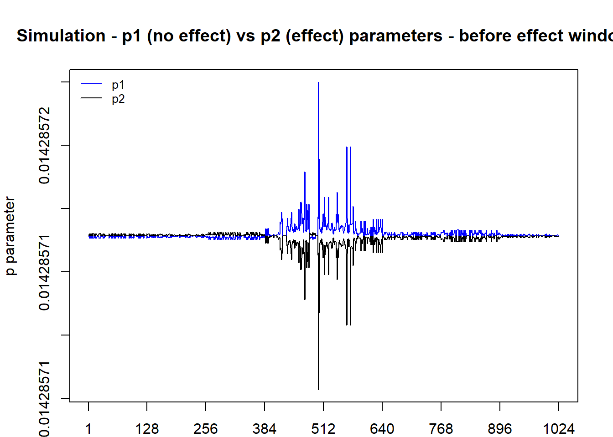
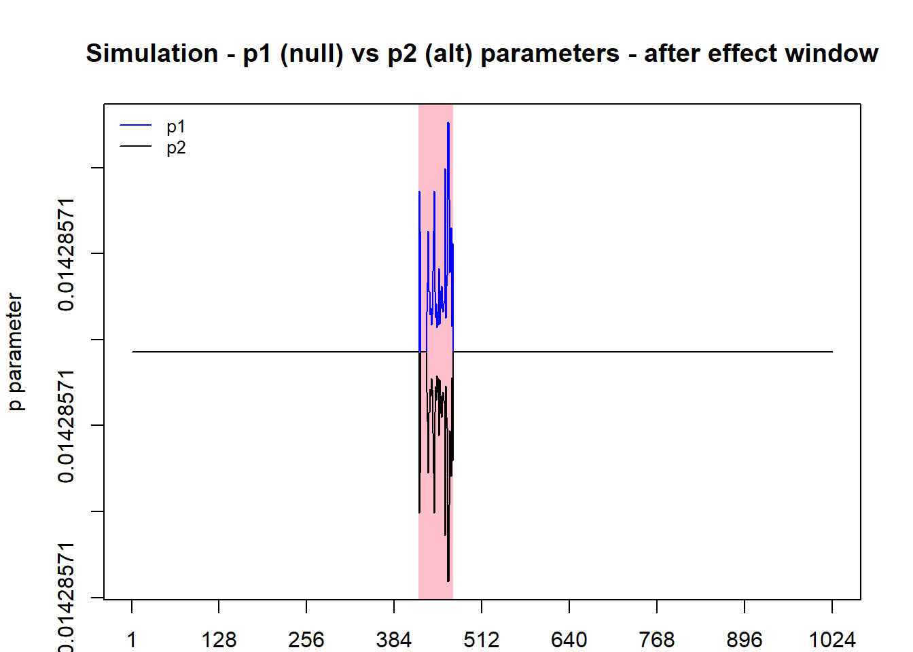
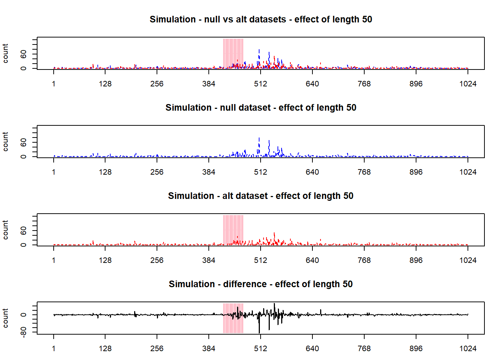
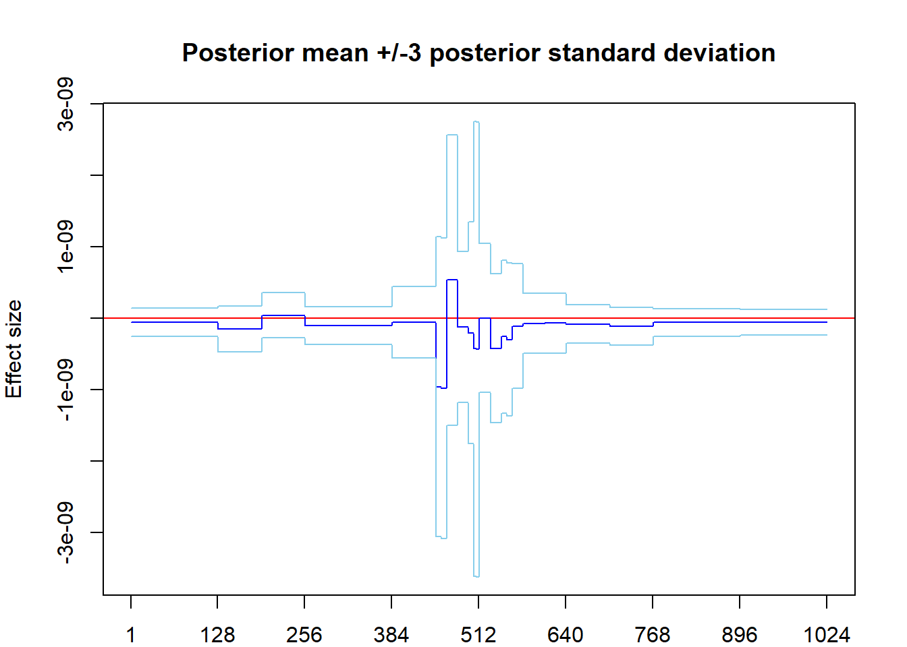
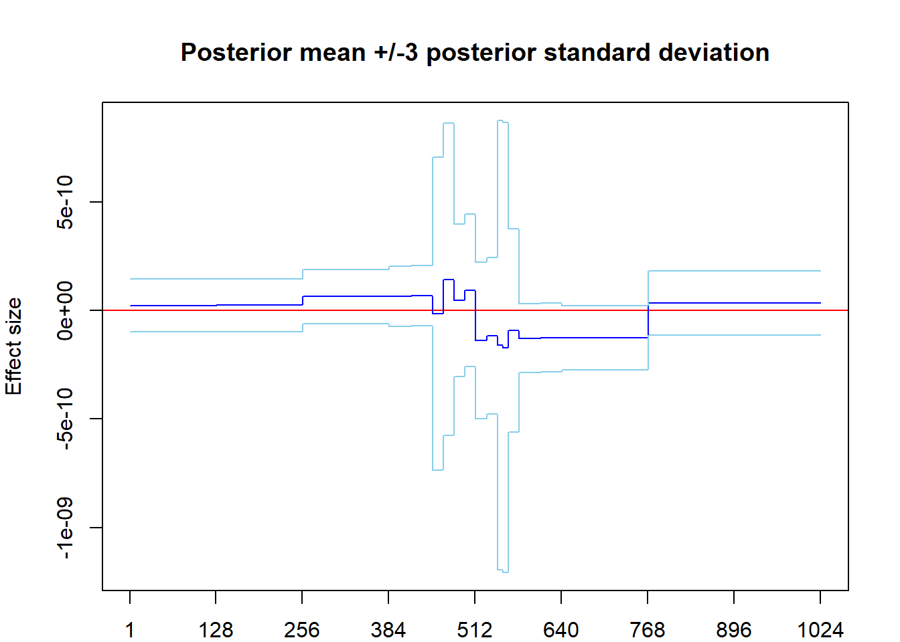
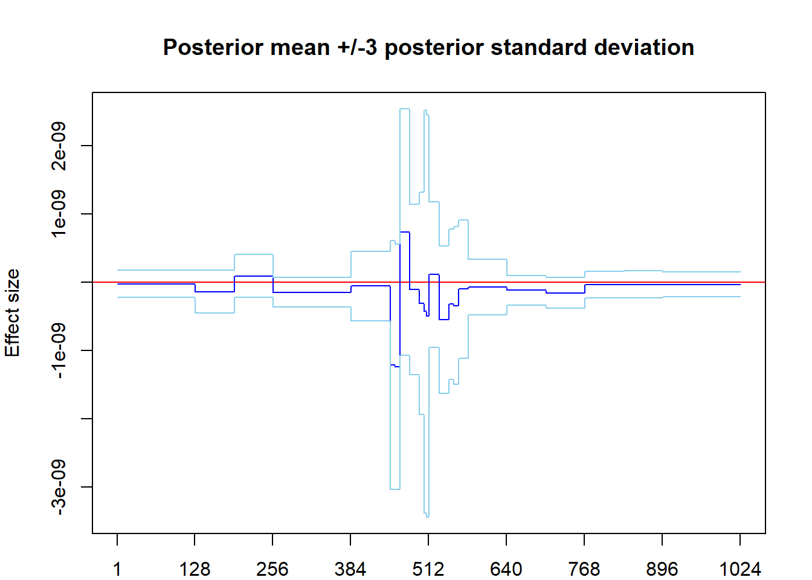
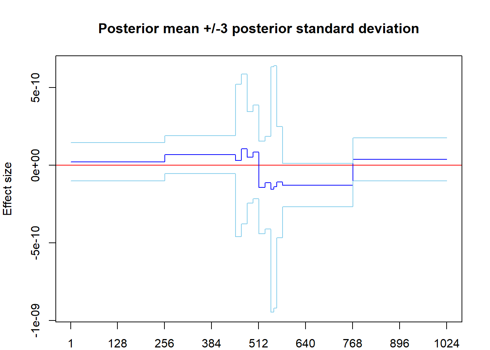
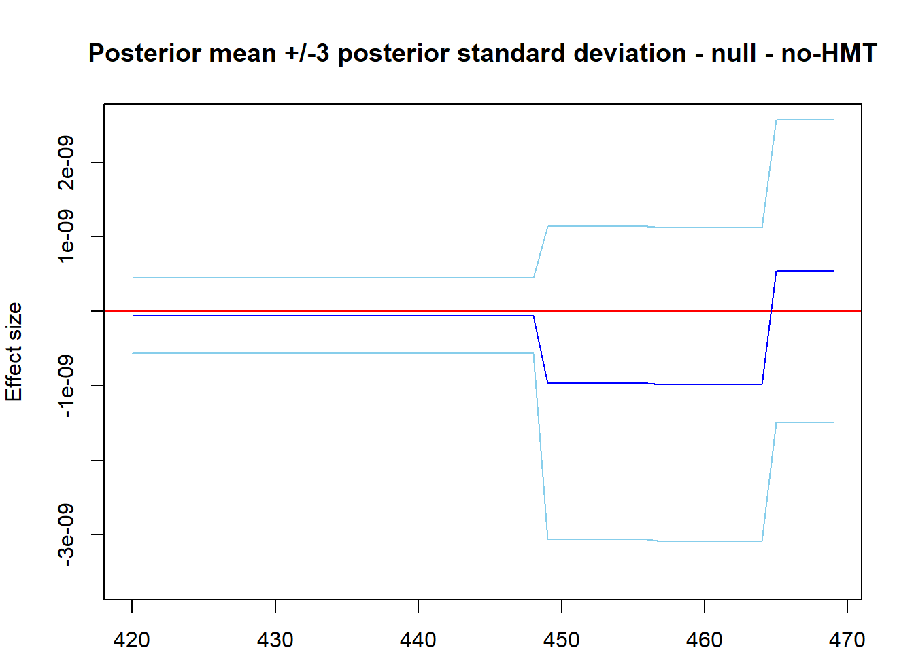
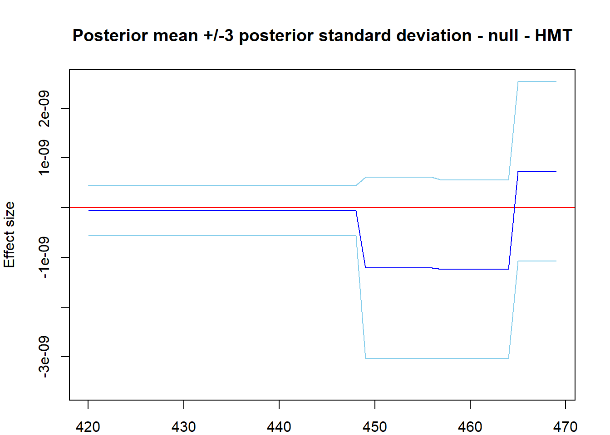

sim3_hmt_benefits - v1.1
Brendan Law
15/08/2019
This is v1.1 – builds on ‘sim3_hmt_benefits.Rmd’. Planned refinements: - Better cater for effet sizes - Potentially use simplified effect sizes (flat, large magnitudes, magnitude scaling)
WaveQTL_HMT vs WaveQTL
The idea is that the benefits will come from being able to detect signals which are not necessarily strong, and not necessarily broad, but relatively localised. These sorts of signals won’t be captured by WaveQTL as they may be ‘split’ or ‘spread’ across a particular scale, and not propagate strongly enough to lower scales. (???)
Perhaps see Shim and Stephens figures for some examples. Perhaps some of that matter around the middle of Figure 4 may be able to be better captured using a HMT prior. There is potentially some difference between groups here, but very narrow, inconsistent, and seemingly very spiky signal.
Read in phenotype (sequencing count) data, and other auxillary data
Here is just a sample codebase. We’re working off the data in the WaveQTL git repo – DNase-seq data at chr17.10160989.10162012 and genotypes at 24 SNPs in 2kb cis-candidate region on 70 individuals.
pheno.dat = as.matrix(read.table(paste0(input_data_path, "chr17.10160989.10162012.pheno.dat")))
dim(pheno.dat)## [1] 70 1024#[1] 70 1024
### Is this useful at all? For later on
## read library read depth
library.read.depth = scan(paste0(input_data_path, "library.read.depth.dat"))
length(library.read.depth)## [1] 70## read Covariates
Covariates = as.matrix(read.table(paste0(input_data_path, "PC4.dat")))
## Read DWT matrix
Wmat_1024 = read.table("~/Cpp/WaveQTL/data/DWT/Wmat_1024",as.is = TRUE)
W2mat_1024 = Wmat_1024*Wmat_1024
# ## Read in SNPs
# geno_data = read.table("~/Cpp/WaveQTL/data/dsQTL/chr17.10160989.10162012.2kb.cis.geno",as.is = TRUE)
# geno_data = geno_data[11,4:73]
#
# # Group based on midpoint of the data
# med_data <- median(as.numeric(as.vector(geno_data[1,])))
# group_data <- as.numeric(as.numeric(as.vector(geno_data[1,])) >= med_data)
# write.table(t(c("blah","A","A",group_data)), file= paste0("~/Cpp/WaveQTL_HMT/data/dsQTL/", "sim3.cis.geno"), row.names=FALSE, col.names = FALSE, quote=FALSE)
# Generate own SNPs data
group_data <- rbinom(n = 70,size = 1,prob = 0.5)
write.table(t(c("blah","A","A",group_data)), file= paste0("~/Cpp/WaveQTL_HMT/data/dsQTL/", "sim3.cis.geno"), row.names=FALSE, col.names = FALSE, quote=FALSE)Now, summarise the counts, and average:
# Count summation
seq_sum <- apply(pheno.dat,MARGIN = 2,sum)
# Count average
seq_avg <- apply(pheno.dat,MARGIN = 2,mean)
plot(seq_sum, type = "l")plot(seq_avg, type = "l") These are very small counts over 70 individuals (like 0 - 25).
These are very small counts over 70 individuals (like 0 - 25).
Simulate effect sizes and effect locations.
What we now need is, for each base, \(b = 1,\dots,1024\), the estimated (data-space) effect size, as well as the locations where there are effects. A lot of this work was done in ‘sim1_waveqtl_hmt_gamma_phi.Rmd’. So what i’ll do (for now) is just drop the code in to get an example output for the 11th SNP/genotype, as was done in that markdown.
The following extracts effect sizes (in the data space) for this DNase-seq data vs SNP 11, using WaveQTL_HMT.
waveqtl_hmt_geno11 <- with_hmt_effect_size(data_path = data_path
,dataset = dataset
,waveqtl_dataset = paste0("WaveQTL/",waveqtl_dataset)
,Wmat_1024 = Wmat_1024
,geno_select = 11
,plot_title = "Posterior mean +/3 posterior standard deviaion - SNP 11")Looks about right. Most importantly, we have mean effect sizes, and the locations where we have effects:
# Base-level effect sizes:
length(waveqtl_hmt_geno11$beta_dataS)## [1] 1024# Locations of effects:
length(waveqtl_hmt_geno11$col_posi)## [1] 144Simulate realistic effect lengths
For example, let’s do effect length 5, 10, and 50.
I’ve created some functions which either:
- Picks an effect interval which lies within the above effect areas
- If the length of interval we require is longer than any above effect area, pick the longest effect area possible for our interval
# Generate table summary of data-space effect areas
int_table <- summarise_effect_intervals(waveqtl_hmt_geno11$col_posi)
set.seed(10)
effect_5 <- effect_length_picker(int_table,5)
effect_10 <- effect_length_picker(int_table,10)
effect_50 <- effect_length_picker(int_table,50)
length(effect_5)## [1] 5length(effect_10)## [1] 10length(effect_50)## [1] 50Simulate realistic effect size
Generate effect sizes, and corresponding probabilities. Method is as follows:
Convert the mean effect into a proportion of baseline vs with effect (note that the effect can go both ways). Baseline is a group with no effect, as opposed to the other group, which has an effect at given base. We convert an additive effect (as per modelling assumptions) into a multiplicative ratio by: \[\begin{align} c_t \frac{1}{70} + \alpha &= \frac{1}{70} c_t e_t \\ \therefore e_t &= 1 + \frac{70 \alpha}{c_t} \end{align}\] where \(c_t\) is the total sum of counts at each base, and \(e_t\) is the new (ratio’d) effect size. Hence, we’re trying to convert something of arbitrary size to something in \((0,\infty)\), where 1 means 0 effect.
We then convert these effect sizes into a \(p\) parameter for our beta-binomial sampling. The original idea is to draw, at each base, a number of trials = total sum of counts (from all 70 individuals), with a probability of success around 1/70, so that the mean number of counts at any base should correspond to the sample average number of counts at any base. We need to augment this to have two parameters, \(p_1\) and \(p_2\), where \(p_2\) reflects the effect size. In order to do this, we assume we draw two sets of data, with total proportion \(p_1 + p_2 = \frac{2}{70}\), and alter the effect sizes according to: \[\begin{align} p_{1,b} &= \frac{2}{70} \frac{1}{1 + e_b} \\ p_{2,b} &= \frac{2}{70} \frac{e_b}{1 + e_b} \\ \end{align}\] where \(p_{1,b}, p_{2,b}\) are the proportions, at base \(b\) when there is no effect, and where there is effect, respectively. Note in the final plot, how they are similar where no effect has been observed, but diverge (yet still together sum to $) when there is an effect.
We note that due to the small effect size, the divergence, despite looking large in the plot, is REALLY small in practice. We may need to scale this up and down a little to find the ‘sweet spot’ usefulness of our algo.
Notes:
- Where no count at a given base, \(c_t\), assume \(e_t = 1\) (ie. no effect). Doesn’t make a difference anyway, as, for these bases, we will simulate drawing from 0 sequencing counts, resulting in a 0 simulated total count. Hence, effect or not, the number of counts here will always be 0.
- We will assume that the effect size ratio = 1 everywhere, outside the required effect window (in a later step)
- For the null dataset, all groups will be drawn from the same distribution (probability = 1/70) – see page 170 of the workings of previous work
Here is a methodology sample, without incorporating effect size:
plot(waveqtl_hmt_geno11$beta_dataS, type = "l", main = "waveQTL effect size in data space")# Convert effect into ratio
effect_ratio <- 1 + (70*waveqtl_hmt_geno11$beta_dataS/seq_sum)
effect_ratio[seq_sum == 0] <- 1
plot(effect_ratio, type = "l", main= "effect size converted to effect ratio (alt/null)")# Incorporate ratio into proportion parameter
p1_vector <- 2/70 * (1/(1 + effect_ratio))
p2_vector <- 2/70 * (effect_ratio/(1 + effect_ratio))
# Plot raw p1,p2
par(mar = c(2,4,4,2))
plot(1,1,type="n"
, xlab = "Base location"
, ylab = "p parameter"
, ylim=c(min(min(p1_vector),min(p2_vector)), max(max(p1_vector),max(p2_vector)))
, xlim=c(1, 1024)
, main ="Simulation - p1 (no effect) vs p2 (effect) parameters - before effect window"
, axes=FALSE)
axis(2)
axis(1, at = c(1,seq(128,1024,128)))
abline(h = 0, col = "red")
lines(p1_vector, col = "blue")
lines(p2_vector, col = "black")
legend("topleft", legend=c("p1", "p2"),
col=c("blue", "black"), lty=c(1,1), cex=0.8,
box.lty=0)
box()
p <- recordPlot()
## Now plot the means (multiply by sequencing sums)
par(mar = c(2,4,4,2))
plot(1,1,type="n"
, xlab = "Base location"
, ylab = "p parameter"
, ylim=c(min(min(p1_vector*seq_sum),min(p2_vector*seq_sum))
, max(max(p1_vector*seq_sum),max(p2_vector*seq_sum)))
, xlim=c(1, 1024)
, main ="Simulation - mean g1 (no effect) vs mean g2 (effect) parameters - before effect window"
, axes=FALSE)
axis(2)
axis(1, at = c(1,seq(128,1024,128)))
abline(h = 0, col = "red")
lines(p1_vector*seq_sum, col = "blue")
lines(p2_vector*seq_sum, col = "black")
legend("topleft", legend=c("p1", "p2"),
col=c("blue", "black"), lty=c(1,1), cex=0.8,
box.lty=0)
box()p <- recordPlot()
## Now plot the difference in means (multiply by sequencing sums)
par(mar = c(2,4,4,2))
plot(1,1,type="n"
, xlab = "Base location"
, ylab = "p parameter"
, ylim=c(min(min((p1_vector - p2_vector)*seq_sum),min((p1_vector - p2_vector)*seq_sum))
, max(max((p1_vector - p2_vector)*seq_sum),max((p1_vector - p2_vector)*seq_sum)))
, xlim=c(1, 1024)
, main ="Simulation - mean g1 (no effect) vs mean g2 (effect) parameters - before effect window"
, axes=FALSE)
axis(2)
axis(1, at = c(1,seq(128,1024,128)))
abline(h = 0, col = "red")
lines((p1_vector - p2_vector)*seq_sum, col = "blue")
lines((p1_vector - p2_vector)*seq_sum, col = "black")
legend("topleft", legend=c("p1", "p2"),
col=c("blue", "black"), lty=c(1,1), cex=0.8,
box.lty=0)
box()p <- recordPlot()Can see that the really, really small difference in effect size resuls in very little difference between the mean counts at any base.
Here is the same thing, now only generating an effect in the designated 50-length effect window:
# Incorporate ratio into proportion parameter
# Initialise as 1/70 everywhere for both
p1_vector <- rep(1/70,1024)
p2_vector <- rep(1/70,1024)
# Add in effects, where required
p1_vector[effect_50] <- 2/70 * (1/(1 + effect_ratio[effect_50]))
p2_vector[effect_50] <- 2/70 * (effect_ratio[effect_50]/(1 + effect_ratio[effect_50]))
y_min <- min(min(p1_vector),min(p2_vector))
y_max <- max(max(p1_vector),max(p2_vector))
par(mar = c(2,4,4,2))
plot(1,1,type="n"
, xlab = "Base location"
, ylab = "p parameter"
, ylim=c(y_min, y_max)
, xlim=c(1, 1024)
, main ="Simulation - p1 (null) vs p2 (alt) parameters - after effect window"
, axes=FALSE)
axis(2)
axis(1, at = c(1,seq(128,1024,128)))
abline(h = 0, col = "red")
if(length(effect_50) > 0){
for(j in 1:length(effect_50)){
polygon(c(effect_50[j]-0.5, effect_50[j]-0.5, effect_50[j]+0.5, effect_50[j]+0.5), c(y_min-2, y_max+2, y_max+2, y_min-2), col ="pink", border = NA)
}
}
lines(p1_vector, col = "blue")
lines(p2_vector, col = "black")
legend("topleft", legend=c("p1", "p2"),
col=c("blue", "black"), lty=c(1,1), cex=0.8,
box.lty=0)
box()
p <- recordPlot()Combine the two to create simulations
Have a 1024 length vector where we know:
- Which bases we want an effect for (everywhere else, effect = 1)
- The total sequence counts (# of trials) at each base
- The probability parameter which governs the sequencing count at each base, to mimic the ‘effect size’
Then, we need to process the data, run it through WaveQTL and WaveQTL_HMT, and analyse the results – ie replicate the effect size plots. Along the way, we should also visualise the null and alternative datasets we’ve generated.
Just a note about the ‘rmutil::rbetabinom’ function – the parameterisation is different.
Sometimes, we denote: \[\begin{align*} X &\sim Beta-Binomial(n,\alpha,\beta) \\ \Rightarrow P(X = k) &= \binom{n}{k}\frac{B(k + \alpha, n - k + \beta)}{B(\alpha, \beta)} \end{align*}\] where \(B(a,b) = \frac{\Gamma(a)\Gamma(b)}{\Gamma(a+b)}\) is the beta function. An alternative parameterisation, as per rbetabinom, is to use two parameters, \(m\), a probability (corresponding to the \(p = \frac{\alpha}{\alpha + \beta}\) of the original), and \(s\), an overdispersion parameter. In this representation, we have: \[\begin{align*} X &\sim Beta-Binomial(n,m,s) \\ \Rightarrow P(X = k) &= \binom{n}{k}\frac{B(k + sm, n - k + s(1-m))}{B(sm, s(1-m))} \end{align*}\] This corresponds to: \[\begin{align*} \alpha &= sm \\ \beta &= s(1-m) \\ \therefore m &= \frac{\alpha}{\alpha + \beta} \\ \therefore s &= \alpha + \beta \end{align*}\]
We need to generate null and alternative samples. We want to create 70 x 1024 matrices – 70 individuals, 1024 bases. We fill out each column of our matrix by taking 70 samples from a beta-binomial to populate each column. Our beta binomial does the ‘total count at base b’ number of trials, but the parameters have the ‘divide by 70’ inbuilt, so the proportion of any one individual having a count is very low. The mean count for each column corresponds to around sum of counts divide by 70, which is the desired mean (sample mean of counts).
Set up beta-binomial distribution, with regards to effect area
over_disp_mult <- 1/70
p1_alpha <- over_disp_mult*p1_vector
p1_beta <- over_disp_mult - p1_alpha
p2_alpha <- over_disp_mult*p2_vector
p2_beta <- over_disp_mult - p2_alpha
# Check to see that these alphas and betas generate the desired probabilities
all.equal(p1_vector, p1_alpha/(p1_alpha + p1_beta))## [1] TRUEall.equal(p2_vector, p2_alpha/(p2_alpha + p2_beta))## [1] TRUELength 50 sample – generate both null and alt. Based on the genotype groups (0 or 1), for the alt, we draw either p1 or p2. For the null dataset, we draw 1/70 for both (no effect). Note that sequencing sum counts aren’t always whole numbers. to deal with this, we draw a ceiling(sum) number of trials.
set.seed(6)
# # Null
# null_data_50 <- matrix(nrow = 70,ncol = 1024)
# for(i in 1:1024){
# null_data_50[,i] <- rmutil::rbetabinom(n = 70, size = ceiling(as.numeric(as.vector(seq_sum[i])))
# , m = (p1_alpha/(p1_alpha+p1_beta))[i]
# , s = (p1_alpha+p1_beta)[i])
# }
#
# # Alt
# alt_data_50 <- matrix(nrow = 70,ncol = 1024)
# for(i in 1:1024){
# alt_data_50[,i] <- rmutil::rbetabinom(n = 70, size = ceiling(as.numeric(as.vector(seq_sum[i])))
# , m = (p2_alpha/(p2_alpha+p2_beta))[i]
# , s = (p2_alpha+p2_beta)[i])
# }
# Null
null_data_50 <- matrix(nrow = 70,ncol = 1024)
for(j in 1:1024){
null_data_50[,j] <- rmutil::rbetabinom(n = 70, size = as.numeric(as.vector(ceiling(seq_sum[j])))
, m = 1/70
, s = over_disp_mult)
}
# Alt
# For alt dataset, create a 70 X 1024 matrix, based on group membership, assigning p1 or p2, respectively
param_mtx <- matrix(nrow = 70,ncol = 1024)
n <- 1
for(i in group_data){
if(i == 1){
param_mtx[n,] <- (p2_alpha/(p2_alpha+p2_beta))
}else{
param_mtx[n,] <- (p1_alpha/(p1_alpha+p1_beta))
}
n <- n + 1
}
alt_data_50 <- matrix(nrow = 70,ncol = 1024)
for(j in 1:1024){
for(i in 1:70){
alt_data_50[i,j] <- rmutil::rbetabinom(n = 1, size = as.numeric(as.vector(ceiling(seq_sum[j])))
, m = param_mtx[i,j]
, s = over_disp_mult)
}
}Plot the average of the two together?
null_data_50_avg <- apply(null_data_50,2,sum)
alt_data_50_avg <- apply(alt_data_50,2,sum)
plt_rng_y <- c(min(min(null_data_50_avg),min(alt_data_50_avg)) * 0.5, max(max(null_data_50_avg),max(alt_data_50_avg)) * 1.5)
par(mfrow = c(4,1),mar = c(2,4,4,1))
plot(1,1,type="n"
, xlab = "position"
, ylab = "count"
, ylim=plt_rng_y
, xlim=c(1, 1024)
, main ="Simulation - null vs alt datasets - effect of length 50"
, axes=FALSE)
axis(2)
axis(1, at = c(1,seq(128,1024,128)))
if(length(effect_50) > 0){
for(j in 1:length(effect_50)){
polygon(c(effect_50[j]-0.5, effect_50[j]-0.5, effect_50[j]+0.5, effect_50[j]+0.5), c(plt_rng_y[1], plt_rng_y[2], plt_rng_y[1], plt_rng_y[2]), col ="pink", border = NA)
}
}
lines(null_data_50_avg, col = "blue", lty = "dashed")
lines(alt_data_50_avg, col = "red", lty = "dashed")
box()
plot(1,1,type="n"
, xlab = "position"
, ylab = "count"
, ylim=plt_rng_y
, xlim=c(1, 1024)
, main ="Simulation - null dataset - effect of length 50"
, axes=FALSE)
axis(2)
axis(1, at = c(1,seq(128,1024,128)))
lines(null_data_50_avg, col = "blue", lty = "dashed")
box()
plot(1,1,type="n"
, xlab = "position"
, ylab = "count"
, ylim=plt_rng_y
, xlim=c(1, 1024)
, main ="Simulation - alt dataset - effect of length 50"
, axes=FALSE)
axis(2)
axis(1, at = c(1,seq(128,1024,128)))
if(length(effect_50) > 0){
for(j in 1:length(effect_50)){
polygon(c(effect_50[j]-0.5, effect_50[j]-0.5, effect_50[j]+0.5, effect_50[j]+0.5), c(plt_rng_y[1], plt_rng_y[2], plt_rng_y[1], plt_rng_y[2]), col ="pink", border = NA)
}
}
lines(alt_data_50_avg, col = "red", lty = "dashed")
box()
plt_rng_y_2 <- c(min(alt_data_50_avg - null_data_50_avg) * 0.9999999999999, max(alt_data_50_avg - null_data_50_avg) * 1.000000000000001)
plot(1,1,type="n"
, xlab = "position"
, ylab = "count"
, ylim=plt_rng_y_2
, xlim=c(1, 1024)
, main ="Simulation - difference - effect of length 50"
, axes=FALSE)
axis(2)
axis(1, at = c(1,seq(128,1024,128)))
if(length(effect_50) > 0){
for(j in 1:length(effect_50)){
polygon(c(effect_50[j]-0.5, effect_50[j]-0.5, effect_50[j]+0.5, effect_50[j]+0.5), c(plt_rng_y_2[1], plt_rng_y_2[2], plt_rng_y_2[1], plt_rng_y_2[2]), col ="pink", border = NA)
}
}
lines(alt_data_50_avg - null_data_50_avg, col = "black")
box()
## Now plot the difference in means of simulated counts (multiply by sequencing sums)
g0_mean <- apply(alt_data_50[which(group_data == 0),],2,mean)
g1_mean <- apply(alt_data_50[which(group_data == 1),],2,mean)
plot(1,1,type="n"
, xlab = "Base location"
, ylab = "simulated avg counts"
, ylim=c(min(min(g0_mean),min(g1_mean))
, max(max(g0_mean),max(g1_mean)))
, xlim=c(1, 1024)
, main ="Simulated data - average of g0 (no effect) vs g1 (effect)"
, axes=FALSE)
axis(2)
axis(1, at = c(1,seq(128,1024,128)))
abline(h = 0, col = "red")
lines(g0_mean, col = "red")
lines(g1_mean, col = "green")
legend("topleft", legend=c("p1", "p2"),
col=c("red", "green"), lty=c(1,1), cex=0.8,
box.lty=0)
box()
p <- recordPlot()Run a sample analyses
- Clean both Null and Alt data through WC transform R thingy
- Do we do all the usual bells and whistles (PCA regression, quantile transforms?)
- What tying level?
- Same set of covariates, right?
- Null data through WaveQTL and WaveQTL_HMT
- Alt data through WaveQTL and WaveQTL_HMT
Cleaning the Null dataset:
wavelet_cleaning_wrapper_function(pheno.dat = null_data_50
,output.path = "~/Cpp/WaveQTL_HMT/test/dsQTL/sims/length_50/null_data/"
,library.read.depth = library.read.depth
,Covariates = Covariates)## Loading required package: wavethresh## Warning: package 'wavethresh' was built under R version 3.5.3## Loading required package: MASS## Warning: package 'MASS' was built under R version 3.5.3##
## Attaching package: 'MASS'## The following object is masked from 'package:dplyr':
##
## select## WaveThresh: R wavelet software, release 4.6.8, installed## Copyright Guy Nason and others 1993-2016## Note: nlevels has been renamed to nlevelsWT##
## Attaching package: 'wavethresh'## The following object is masked from 'package:rmutil':
##
## wrCleaning the Alt dataset:
wavelet_cleaning_wrapper_function(pheno.dat = alt_data_50
,output.path = "~/Cpp/WaveQTL_HMT/test/dsQTL/sims/length_50/alt_data/"
,library.read.depth = library.read.depth
,Covariates = Covariates)SHOULD WE ONLY NEED THE NON-QT version for effect sizes? The QT version is for likelihood/association testing - is this something we’re going to be interested in also? Or just ability to identify effects at certain locations?
Run null dataset
Run through WaveQTL:
Run through WaveQTL_HMT:
Run alt dataset
Run through WaveQTL:
Run through WaveQTL_HMT:
Analysis - no HMT
Quick effect size analysis and plotting. No_HMT is easy. Read in some more pre-requisite data (like the inverse wavelet transform):
##### Null
null_50_data_path = "~/Cpp/WaveQTL_HMT/test/dsQTL/output/"
null_50_data_prefix = "sim3_noQT_null"
null_50 <- no_hmt_effect_size(data_path = null_50_data_path
,data_prefix = null_50_data_prefix
,Wmat_1024 = Wmat_1024
,W2mat_1024 = W2mat_1024
,sel_geno_IX = 1)
##### Alt
alt_50_data_path = "~/Cpp/WaveQTL_HMT/test/dsQTL/output/"
alt_50_data_prefix = "sim3_noQT_alt"
alt_50 <- no_hmt_effect_size(data_path = alt_50_data_path
,data_prefix = alt_50_data_prefix
,Wmat_1024 = Wmat_1024
,W2mat_1024 = W2mat_1024
,sel_geno_IX = 1)
Analysis - with HMT
##### Null
null_50_data_path = "~/Cpp/WaveQTL_HMT/test/dsQTL/output/"
null_50_data_prefix = "sim3_noQT_null"
null_50_hmt <- with_hmt_effect_size(data_path = null_50_data_path
,dataset = paste0(null_50_data_prefix,"_HMT")
,waveqtl_dataset = null_50_data_prefix
,Wmat_1024 = Wmat_1024
,geno_select = 1)
##### Alt
alt_50_data_path = "~/Cpp/WaveQTL_HMT/test/dsQTL/output/"
alt_50_data_prefix = "sim3_noQT_alt"
alt_50_hmt <- with_hmt_effect_size(data_path = alt_50_data_path
,dataset = paste0(alt_50_data_prefix,"_HMT")
,waveqtl_dataset = alt_50_data_prefix
,Wmat_1024 = Wmat_1024
,geno_select = 1)
Ad hoc plots
Two final comparisons, by plot:
Null case: 
Alt case: